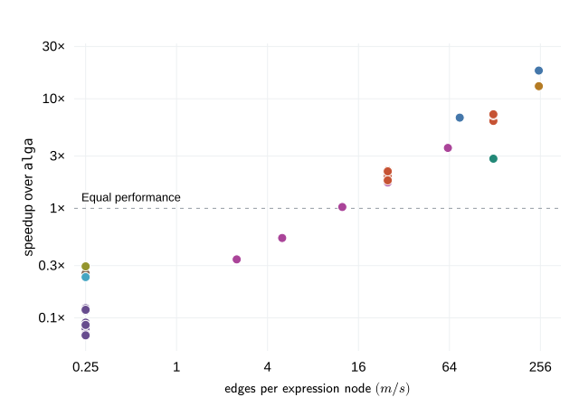

Search over Algebraic Graphs
In my post Generic Recursion Applied to Algebraic Graphs1 we explored how we can leverage recursion schemes to perform basic operations on a graph data structure. In that post, as well as in the alga library itself2, algorithms on graphs were facilitated by first converting the algebraic graph representation into an adjacency map and performing the algorithms on that data structure. In Algebraic Graphs with Class3, Andrey Mokhov described a desire to perform algorithms such as search on the algebraic graph representation itself.
In this post, we will explore just that and outline a way to conduct Dijkstra’s algorithm over the same algebraic representation alga uses, without first constructing an adjacency map. The algorithm will run in \(O(s \log s)\) time, where \(s\) is the size of the algebraic graph expression.
Algebraic Graphs Redux
As a reminder, alga defines an algebraic graph as something similar to following data type. This time, it has labeled (weighted) edges:
data Graph w v
= Empty
| Vertex v
| Overlay (Graph w v) (Graph w v)
| Connect w (Graph w v) (Graph w v)

The challenge we have is to conduct algorithms over the description of the graph, and not the graph itself; expanding the graph prior to a search would require materializing all edges, which is \(O(n^2)\), and we’d lose out on the benefits of many algorithms that are sub quadratic in the number of vertices.
Rather than rehash the basics, let’s focus on perhaps the most important constructor, Connect. For directed graphs, this operation describes a biclique, i.e. a complete directed bipartite subgraph when the vertices are disjoint, which is set of edges stemming from every vertex in the left child graph to every vertex in the right child graph. It can accomplish this using \(O
(1)\) space for itself, and \(O(n)\) space for its children, i.e. not proportional to the number of edges, which is \(O(n^2)\). In other words, alga’s representation is a form of graph compression.
Graph Compression
The field of graph compression is active and evolving. In Faster Graph Algorithms Through DAG Compression4, Max Bannach, Florian Andreas Marwitz, and Till Tantau (BMT) describe a set of algorithms over a data structure they dubbed a switching graph.
Before we introduce switching graphs, let’s introduce its building blocks. BMT define a cluster DAG \(C = (V', A)\) as a DAG whose sinks are exactly the set of vertices \(V\) in the graph \(G\) it describes. A vertex \(v' \in V'\) describes a so-called cluster \(C(v')\), which represents the subset of sinks that are reachable from that vertex. A cluster \(C(v)\) where \(v\in V\) is trivially the set \(\{v\}\). \(A\) represents the set of directed edges in the cluster DAG and are called cluster edges.
Building on top of cluster DAGs, a DAG compression is a graph \(D = (V', A, E')\) where \(V'\) and \(A\) are the same vertex and edge sets as in the cluster DAG \(C\). \(E' \subseteq V' \times V'\) is an additional edge relation. If \((u', v')\) is in \(E'\), then the set of edges \(C(u') \times C(v')\) is in \(G\). This is a complete bipartite graph with directed edges from all sinks (vertices in \(G\)) reachable from \(u'\) to all reachable from \(v'\).

This may seem slightly familiar. alga’s Connect w x y adds edges \(V(x) \times V(y)\) to the parent graph \(G'\), which is the cross product of all vertices in child graph x and all vertices in child graph y, unioned with the edges in x and y. Given that all trees are DAGs, if we consider the node for child graph x to be a cluster node \(x'\), and the node for child graph y to be a cluster node \(y'\), then we can see that the set of vertices in \(G\) described by \(V(x)\) equals the set of vertices described by \(C(x')\), and likewise for \(V(y)\) and \(C(y')\). The cross product \(V(x) \times V(y)\) therefore describes the same set of edges as \(C(x') \times C(y')\). To convert an alga expression into a DAG compression, we contribute each edge from an Overlay or Connect node to its child to \(A\), and we contribute an edge \((x', y')\) for each Connect w x' y', which represents \(C(x') \times C(y')\), to \(E'\).
One missing piece in reducing an alga expression to a DAG compression is that there is no limit to the number of leaf Vertex constructors that can denote the same logical vertex \(v\). In a cluster DAG, as mentioned earlier, the set of sinks is exactly \(V\). To fully reduce a tree compression to a DAG compression, all logically equivalent Vertex v constructors must be consolidated into one node. We can discard subexpressions that contain no vertices, such as Empty or Overlay Empty Empty, and not carry them to the DAG representation. Lastly, because alga expressions can outline multiedges due to duplicate node occurrences, we can handle those by taking the minimum weighted edge. This is okay for the purposes of SSSP because we will always take the edge that costs less for any shortest path.

Switching graphs
Now that we’ve identified the relationship between alga expressions and DAG compressions, we can move onto the data structure that enables efficient search, which is the switching graph.
The switching graph is an augmentation of the DAG compression that allows a search to traverse backwards through parent-child directed edges in order to establish reachability and distances between vertices in \(G\). To accomplish this, BMT duplicate all vertices \(V'\) except for the vertices representing \(V\). The original, copied vertex \(x'\in V'\setminus V\) is an upper vertex, a non-copied vertex \(v\in V\) is a middle vertex, and a copy \(\overline{x'}\) is a lower vertex. For all middle vertices, \(\bar v=v\). Edges \((\overline{y'}, \overline{x'})\) are added to the switching graph for every parent-child edge \((x', y') \in A\). Semantically, they represent climbing back up to ancestor cluster nodes. For every compressed edge \((x', y')\) in \(E'\), the compressed edge is removed and a switching edge is added in the switching graph from node \(\overline{x'}\) to node \(y'\). The source \(\overline{x'}\) can either be a lower node or a middle node, and the destination \(y'\) can either be a middle or upper node, depending on whether or not the endpoints belong to \(V\). Traversing those switching edges incurs a switching cost \(w\).

BMT prove that there is no loss of search or distance semantics when performing those algorithms over the switching graph compared to the original graph \(G\). They prove that these algorithms run over the switching graph, which is \(O(s)\), without needing to decompress the representation and generate the same SSSP as the search would on \(G\).
Dijkstra’s for alga expressions
Consequently, we can perform a search over the alga expression without decompressing it into an adjacency map, as the alga library does today. However, in the spirit of performing as much of the algorithm on the Graph expression as possible, we will not be constructing a separate switching graph. Instead, we will perform the search over a lazily-generated frontier of search states and visit nodes of the expression.

To support this, we’re going to traverse the expression and create an index that caches some important information about the graph. Unlike an adjacency map, this construction will not be proportional to the number of edges in \(G\):
makeBaseFunctor [''Graph]
type Weight w = (Ord w, Num w)
type Vertex v = Ord v
type NodeId = Int
data Index w v = Index
{ parentOf :: IntMap NodeId
, occurrencesOf :: Map v [NodeId]
, nodeFor :: IntMap (GraphF w v NodeId)
}First, the obvious; the index stores the parent of every node other than the root. Every node in the graph expression will be assigned an integer NodeId. What’s not obvious are the purposes of occurrencesOf and nodeFor; because there are no restrictions on how many times a vertex \(v\) can appear as Vertex v in the graph, there may be more than one. So, we want to track which node ids those occurrences correspond to, which are inserted into occurrencesOf. For convenience, and for Connect and Overlay constructors, we’d like a way to quickly retrieve the node ids of their children; that is the purpose of nodeFor. This way, the node ids are available to us directly as we traverse the expression.
You may have wondered what GraphF w v NodeId is and why it’s separate from Graph. This is the derived functor implementation of Graph from an invocation to makeBaseFunctor [''Graph], provided by Haskell’s recursion scheme library. I’ve talked about recursion schemes a few times before, so won’t review that here. The important part is that recursion schemes allow us to separate recursion from the logic of our transformations. Here is what the GraphF functor looks like:
data GraphF w v r
= EmptyF
| VertexF v
| OverlayF r r
| ConnectF w r rWhen we traverse the algebraic graph expression and reach a Connect or Overlay node, its children are going to be supplied to us as node ids in a GraphF w v NodeId layer, which will be placed into the nodeFor map and whose ids are going to be inserted into the parentOf map.
To build the index, we’re going to keep track of some state, namely the next node id and current index. We’ll build the computation that calculates the next state as we fold the expression tree in a bottom up fashion, using the state monad, and execute our index builder with a counter that begins from zero:
type Indexing w v = State (Int, Index w v) NodeIdOur state monad is a function that allocates an id, indexes the current node, and yields that node’s id. To build the index, we’ll fold the tree bottom up using the cata recursion scheme. It invokes a helper function, called indexAlg, which breaks down the tree layer by layer.
At each layer, we sequence the computations of children and insert the result into the nodeFor map. If the current node is a VertexF v then sequencing it is a no-op, and so VertexF v is inserted into the map as well. The sequenced children of Connect and Overlay become registered in the parentOf map, pointing to the current node’s id. Lastly, if the current node is a Vertex v, we add the node’s id into the occurrence list for v.
-- allocates a new node id
fresh :: State (Int, Index w v) NodeId
fresh = do
(n, index) <- get
put (n + 1, index)
pure n
indexAlg :: Vertex v =>
GraphF w v (Indexing w v) -> Indexing w v
indexAlg actions = do
layer <- sequenceA actions
nodeId <- fresh
-- maps a function over the Index portion of the current state
let record = modify . second
-- updates the index's records
record $ \index -> index
{ nodeFor = IM.insert nodeId layer (nodeFor index)
, parentOf =
foldr (`IM.insert` nodeId)
(parentOf index)
(toList layer)
, occurrencesOf = case layer of
VertexF v ->
M.insertWith (++) v [nodeId] (occurrencesOf index)
_ -> occurrencesOf index
}
pure nodeIdYou can think of this process as building one large tree of computations that we don’t execute until we’re done describing it from bottom to top. When we’re done folding the graph expression, we’ll be left with an action that we can then execute to retrieve the final (Int, Index w v) pair and grab the completed index with snd.
emptyIndex :: Index w v
emptyIndex = Index IM.empty M.empty IM.empty
buildIndex :: Vertex v => Graph w v -> Index w v
buildIndex g = snd (execState (cata indexAlg g) (0, emptyIndex))With the index built, we can now efficiently reference nodes in the expression and run Dijkstra’s. As mentioned, BMT run Dijkstra’s directly over the switching graph. In our case, we will run it over a lazily-generated frontier of neighboring search states:
data SearchState v
= Up NodeId
| Down NodeId
| At v
deriving (Eq, Ord, Show)When reading the BMT paper, I thought that the terminology was a bit confusing. I’m used to looking at DAGs from sources at the top to sinks at the bottom. Same with trees. As mentioned earlier, in the BMT switching graph, copies of the parents that we move to are considered lower nodes. This is counterintuitive to me! So in the SearchState, Down will represent visiting a node’s child, Up will represent visiting its parent, and At v will represent visiting a Vertex v.

Our search will traverse the expression and, for each node in the expression, generate SearchState neighbors that indicate the next state. Let’s start with the simplest case to understand, moving down from a node:
-- given the index and a node id, move downward from the
-- corresponding node
descend :: Index w v -> NodeId -> [SearchState v]
descend index n =
case nodeFor index IM.! n of
EmptyF -> []
VertexF v -> [At v]
_ -> [Down n]
downNeighbors
:: Weight w
=> Index w v -> NodeId -> [(w, SearchState v)]
downNeighbors index n =
[ (0, s) -- descending to a node costs nothing
| child <- toList (nodeFor index IM.! n)
, s <- descend index child
]descend gives us the downward state representation of a node n. If we’re at a Vertex v, then we’re At v. If we’re at a Connect or Overlay node, the corresponding search state is Down.
Given the index and a node id, downNeighbors converts the children of a node to a list and, for each child, converts that child to its search state form. Traveling to that child costs nothing because it does not represent traversing a real, weighted edge.

Only traversing through a Connect node represents crossing a weighted edge, and so incurs a cost when moving up from its left child and down to its right. The upNeighbors function covers this case:
upNeighbors
:: Weight w
=> Index w v -> NodeId -> [(w, SearchState v)]
upNeighbors index n =
case IM.lookup n (parentOf index) of
Nothing -> []
Just p ->
case nodeFor index IM.! p of
-- crossing a connect node is only valid from the left child
-- because the graph is directed from l to r
ConnectF w l r | n == l ->
(0, Up p) : [ (w, s) | s <- descend index r ]
_ -> [(0, Up p)]Put simply, if the current node has a parent Connect, and the current node is the left child of it, then in addition to marking the parent as a neighbor, we mark the right child of the parent Connect node as a neighbor with plans to descend to it. The cost of this visitation is \(w\). Every other neighbor is Up with no cost associated with it.
Finally, we want a special function for visiting neighbors from a Vertex in the expression tree, i.e. from the search state At. You may have thought to yourself that upNeighbors should cover this case. The reason we don’t use this directly is because, given that there can be more than one Vertex v in the expression tree, we need all possible upward neighbors from that search state:
atNeighbors
:: (Weight w, Vertex v)
=> Index w v -> v -> [(w, SearchState v)]
atNeighbors index v =
concatMap (upNeighbors index)
(M.findWithDefault [] v (occurrencesOf index))
All of the above make up one neighbors function, which is going to be the canonical neighbors function used in our Dijkstra search:
neighbors
:: (Weight w, Vertex v)
=> Index w v -> SearchState v -> [(w, SearchState v)]
neighbors index (Up n) = upNeighbors index n
neighbors index (Down n) = downNeighbors index n
neighbors index (At v) = atNeighbors index vWe can now define dijkstra using the familiar construction; we keep a distance map that doubles as the seen set, and a priority queue of (w, SearchState v) using Haskell’s Set, which gives us a convenient minView function.
dijkstra :: (Weight w, Vertex v)
=> Index w v -> v -> Map v w
dijkstra index start =
go (Set.singleton (0, At start)) M.empty
where
go queue distances =
case Set.minView queue of
Nothing -> vertexDistances distances
Just ((d, next), rest)
| M.member next distances -> go rest distances
| otherwise ->
let relax (cost, neighbor) =
Set.insert (d + cost, neighbor)
newQueue =
foldr relax rest (neighbors index next)
newDistances = M.insert next d distances
in go newQueue newDistances
-- grab only distances from vertices in G,
-- i.e. At search states
vertexDistances distances =
M.fromList [ (v, d) | (At v, d) <- M.toList distances ]To refresh your memory of Dijkstra’s algorithm, we set up a queue prioritized by minimum distance to a particular node, pop that value and, if unvisited, get its neighbors and insert them into the queue. Something different about this implementation is that we do not gate insertion of neighbors into the priority queue based on whether or not we’ve already visited the search state; the neighbors are inserted into the queue regardless. What makes this okay is the line M.member next distances -> go rest distances, which gates at the pop step rather than at the push step. As a consequence, we pay a minor penalty of having the queue ignore values already seen.

Benchmarks
So how does this hold up to the AdjacencyMap approach that alga takes. Well, it depends on the nature of the input graph. Unsurprisingly, graphs that are most effectively compressed using an alga expression fare best with the switching graph approach. As the ratio of graph size to expression size increases, the switching algorithm’s speedup over the adjacency map approach tends to increase.
{kind=link}

| Graph | Overhead + search (ms) | Search only (ms) | ||
|---|---|---|---|---|
| Switching |
alga
|
Switching |
alga
|
|
| Transitive tournamenta | 2.91 | 52.55 | 2.03 | 19.27 |
| Complete directed | 3.99 | 51.96 | 2.43 | 37.24 |
| Grouped (5,000)b | 82.98 | 596.74 | 33.14 | 256.34 |
| Complete bipartite | 1.40 | 3.96 | 0.72 | 0.20 |
| Layered (20 layers)c | 3.51 | 3.61 | 1.96 | 2.00 |
| Path | 3.15 | 0.80 | 1.43 | 0.23 |
| Random (20%)d | 2504.05 | 174.72 | 1292.91 | 15.26 |
| Graph | Overhead + search (MB) | Search only (MB) | ||
|---|---|---|---|---|
| Switching |
alga
|
Switching |
alga
|
|
| Transitive tournamenta | 10.53 | 103.86 | 7.24 | 57.61 |
| Complete directed | 15.21 | 115.79 | 8.54 | 113.66 |
| Grouped (5,000)b | 174.38 | 674.32 | 93.29 | 627.95 |
| Layered (20 layers)c | 12.51 | 7.86 | 6.20 | 6.38 |
| Path | 11.32 | 3.80 | 4.34 | 0.98 |
| Complete bipartite | 6.00 | 1.66 | 2.75 | 0.79 |
| Random (20%)d | 3276.09 | 479.34 | 1713.22 | 28.63 |
a A transitive tournament has an edge from every vertex to every later vertex in an ordering
b Ten equal-sized groups joined by randomly chosen, uniformly weighted directed bicliques
c Layered graphs divide into equal-sized layers, with an edge from every vertex in one layer to every vertex in the next
d Random graphs have 1,000 vertices and are expressed edge by edge, with the indicated edge probability, conditioned on strong connectivity. Values are medians across five seeded graphs
David Anekstein. Generic Recursion Applied to Algebraic Graphs. 31 July 2022.↩︎
alga: Algebraic graphs. Haskell library.↩︎Andrey Mokhov. Algebraic Graphs with Class. Haskell Symposium, 2017.↩︎
Max Bannach, Florian Andreas Marwitz, and Till Tantau. Faster Graph Algorithms Through DAG Compression. STACS, 2024. Cluster DAGs and DAG compressions: p. 8:6; switching graphs and distance preservation: Definition 3.2 and Theorem 3.4, p. 8:10; weighted-search bound: Theorem 1.6, p. 8:4.↩︎